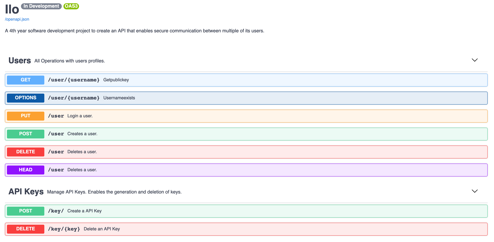
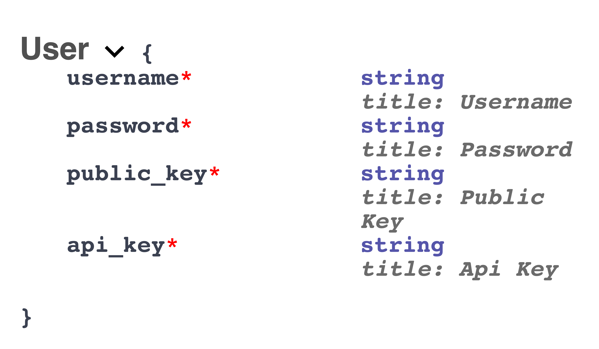
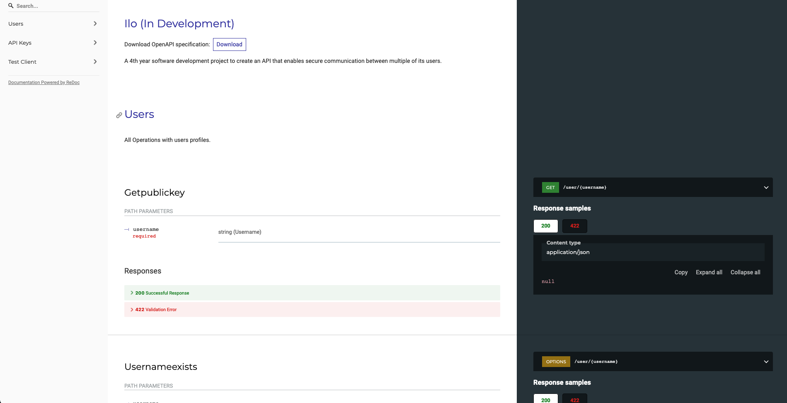

Swagger & Notes¶
FastAPI will generate Swagger documentation. This can be accessed with the IP Address, and accessing /docs, for example, 1.236.66.46:6921/docs. An example of this can be seen below.

This will showcase the API made available through FastAPI. Additionally navigating to the /openapi.json, for example, 1.236.66.46:6921/openapi.json will provide a JSON respecting the OpenAPI format of the public-facing functions. An excerpt is shown below
{
"openapi": "3.0.2",
"info": {
"title": "Ilo",
"description": "A 4th year software development project .....",
"version": "In Development"
},
"paths": {
"/user/{username}": {
"get": {
"tags": [
"Users"
],
"summary": "Getpublickey",
"operationId": "getPublicKey_user__username__get",
"parameters": [
{
"required": true,
"schema": {
"title": "Username",
"type": "string"
},
"name": "username",
"in": "path"
}
],
JSON Schema¶
In addition, a JSON Schema is provided for each OpenAPI function. This is annotating how a JSON should be formatted to be accepted as a valid request, this can include the use of optional parameters with the request. This information is provided by the Swagger documentation and is provided as part of the OpenAPI JSON. The server will reject the request if the schema is not abided to.
An example of what a Schema may look like is shown below

This schema in its' raw format from the OpenAPI JSON is shown below
"User":
{
"title": "User",
"required": [
"username",
"password",
"public_key",
"api_key"
],
"type": "object",
"properties":
{
"username": {
"title": "Username",
"type": "string"
},
"password": {
"title": "Password",
"type": "string"
},
"public_key": {
"title": "Public Key",
"type": "string"
},
"api_key": {
"title": "Api Key",
"type": "string"
}
}
}
Noteworthy information¶
ReDoc documentation¶
Documentation in the ReDoc format can be accessed by navigating to /redoc.

User Creation¶
A user must have a password. Ilo's minimum password requirements are
- Length of 8 characters
- Contain minimum 1 number
- Contain minimum 1 lowercase letter
- Contain minimum 1 uppercase letter
- 1 non-alphanumeric character
Unicode support¶
The platform has support for ᵤₙᵢcₒdₑ characters in sending messages and usernames. This allows none-latin characters to be used, or support for sending emotes such as 💞 😃 🚀 🍪 🐱